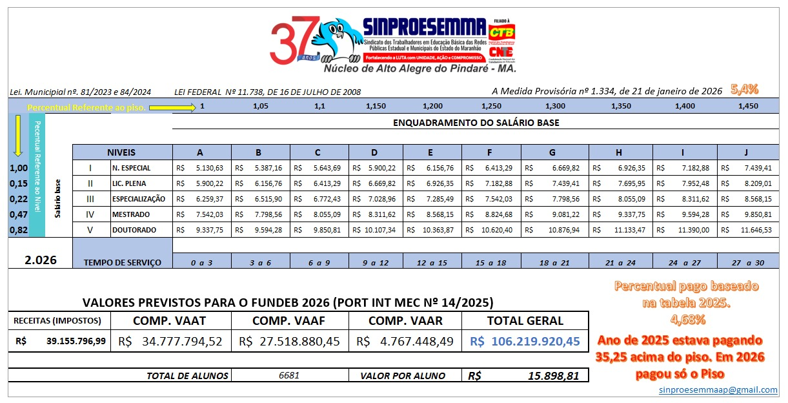

Tabela Salarial e Plano de Carreira
Este espaço foi reservado para divulgação oficial da tabela salarial e do plano de carreira dos profissionais da educação.
Tabela Salarial
Tabela salarial oficial da categoria para consulta por nível, classe e referências vigentes.
Referência: Tabela Salarial 2026.

Plano de Carreira
Consulte as regras de progressão, promoções, gratificações e demais critérios da categoria. O documento disponibilizado corresponde ao Plano de Carreira, Cargos e Remuneração dos Profissionais do Magistério e da Educação Básica Pública do Município de Alto Alegre do Pindaré - MA.
Calculadora Salarial
A Calculadora Salarial permite simular descontos e estimar o salário líquido com base na tabela salarial, com cálculos já atualizados conforme a nova tabela IRRF 2026.